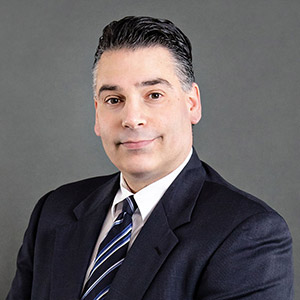

01
Insurance Fraud Litigation
Focused litigation for sophisticated insurance-fraud matters requiring close analysis of records, conduct and financial evidence.
ExploreFraud Litigation Investigations Independent Oversight
Kennedy Vuernick represents individuals, businesses, whistleblowers and public entities in fraud-related litigation, complex disputes and False Claims Act matters—and serves in trusted investigative, monitoring and court-appointed roles.
Built for matters where evidence changes everything
Kennedy Vuernick investigates and litigates fraud-related matters and business disputes for individuals, organizations and governmental entities. The firm’s work connects deep investigation with deliberate litigation strategy.
Every matter is different. The method is consistent: understand the record, follow the evidence and build the case carefully.
About Kennedy VuernickFocused experience
Clear pathways for clients, whistleblowers, organizations, referring counsel and courts seeking experienced, evidence-driven professionals.
Focused litigation for sophisticated insurance-fraud matters requiring close analysis of records, conduct and financial evidence.
ExploreCounsel in complex matters involving alleged fraud against federal or state government programs and funds.
ExploreCareful guidance for individuals with information concerning potential fraud involving government funds or programs.
ExploreInvestigating claims involving deceptive transactions, financial misconduct and complex commercial records.
ExploreStrategic counsel for individuals facing deceptive schemes, financial misconduct and evidence-intensive disputes.
ExploreService in court-appointed and neutral roles, supported by experience in complex Chancery and business disputes.
ExploreImpartial investigations and independent oversight for businesses, nonprofits and public entities confronting possible misconduct.
Explore
The Kennedy Vuernick method
Fraud matters rarely turn on one fact. They are built through records, timelines, testimony and the patient work of connecting what others overlook.
Documents. Timelines. Testimony. Careful analysis.How we approach complex matters
Whistleblower representation
Individuals with information about potential fraud involving government funds often need thoughtful legal guidance before deciding what to do next. Kennedy Vuernick provides a focused path for learning about the firm’s whistleblower representation.
Website inquiries do not create an attorney-client relationship. Do not submit confidential information until representation is confirmed.
False Claims Act
& Qui Tam Matters
Independent judgment
Kennedy Vuernick brings investigative discipline and practical judgment to court-appointed, monitoring and independent-review roles.
Independent service in complex Chancery matters where courts and parties require careful analysis, reliable reporting and sound judgment.
Discuss an appointmentThorough, impartial review for organizations confronting suspected misconduct, government scrutiny or the need for independent oversight.
Explore monitorship experienceThe attorneys
A consistent profile system connects each attorney’s experience with the practices, matters and analysis most relevant to prospective clients and referral sources.

View profile ↗

View profile ↗

View profile ↗

View profile ↗

View profile ↗
Biography and photography forthcoming
Two distinct editorial channels
Legal and industry analysis is separated from firm announcements so readers can immediately find the type of update they need.
Legal & Industry Insights
Firm News

Start a conversation
Contact Kennedy Vuernick with a high-level overview. The firm can then determine whether a conversation is appropriate.
Submitting an inquiry does not create an attorney-client relationship. Do not send confidential information until representation is confirmed.